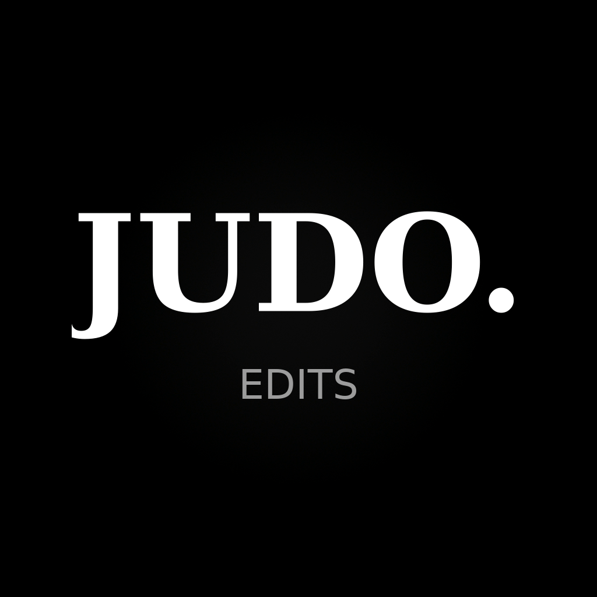

Judo Edits
Judo Edits is a personal tool that automatically edits short judo highlight videos (ippons, 15–30 seconds) and uploads them as drafts to the creator's own TikTok inbox. The creator then adds music and a caption in the TikTok app and publishes manually.
Nothing is ever published publicly without the creator's manual action.